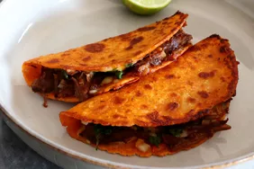

Birria Tacos

Description:
Birria is a meat stew or soup. The meat is marinated in an adobo made of
vinegar, dried chilies, garlic, and herbs and spices before being cooked
in a broth.
Taco is a traditional Mexican dish consisting of a small hand-sized corn
or wheat based tortilla topped with a filling. The tortilla is folded
the filling before being eaten.
Birria Tacos are tacos filled with the stew's tender juicy meat and dipped
in the birria. They are served with consomme, or broth from the stew.
Ingredients:
- 4 cups chicken broth
- 4 dried guajillo chiles, stemmed and seeded
- 4 dried ancho chiles, stemmed and seeded
- 1 dried de árbol chile, stemmed and seeded (Optional)
- 4 tablespoons canola oil, divided
- 1 medium white onion, quartered, divided
- 4 cloves garlic
- 1 (14.5 ounce) can fire-roasted diced tomatoes
- 2 tablespoons apple cider vinegar
- 2 teaspoons kosher salt, divided
- 2 teaspoons ground cumin
- 1 teaspoon dried oregano
- ½ teaspoon ground black pepper
- ¼ teaspoon ground cloves
- 1 ½ pounds skinless, boneless chicken breasts
- 1 bay leaf
- 12 (6 inch) corn tortillas
- 12 lime wedges, for serving
Steps:
-
Add chicken broth to a medium saucepan and bring to a boil over medium-high.
Remove from heat and add dried chiles. Cover and let sit until chiles have
softened, about 10 minutes.
-
Meanwhile, heat 2 tablespoons of the oil in a large pot or Dutch oven over
medium-high. Add 3 of the onion quarters, reserving the last quarter for later
use, and garlic to pan. Cook, flipping once, until charred, about 6 minutes.
Remove from heat (do not wipe out the pot), and transfer onion and garlic to a blender.
Add chicken broth, chiles, tomatoes, vinegar, 1 teaspoon salt, cumin, oregano, pepper,
and cloves. Secure lid on blender, and remove center piece to allow steam to escape.
Place a clean towel over opening. Process until combined, about 1 to 2 minutes.
Pour through a fine mesh strainer into a large bowl.
-
Season chicken with remaining 1 teaspoon salt. Add remaining 1 tablespoon oil in to the
large pot; heat over medium-high. Add chicken; cook, flipping once, until golden brown,
about 3 minutes per side. Pour blended chile mixture over meat chicken and top with bay leaf.
Cover and cook over medium-low until chicken is cooked through, about 25 minutes.
-
Meanwhile, chop remaining onion quarter. Set aside.
-
Uncover pot, discard bay leaf, and remove chicken from chile mixture and shred.
Transfer shredded chicken to a large bowl and top with 1 cup of the chile mixture;
leave remaining mixture in the Dutch oven pot over medium-low.
-
Heat remaining 1 tablespoon oil in a large nonstick skillet over medium-high.
Working with 1 tortilla at a time, quickly dip tortilla into sauce until well coated.
Transfer to skillet and top with 1/4 cup of the chicken.
Repeat process with as many tortillas as will fit on in skillet.
Cook until tortillas are golden brown and beginning to crisp, 1 to 2 minutes.
Fold tortillas in half and transfer to a plate. Repeat process with remaining sauce,
meat chicken and tortillas.
-
Divide tacos evenly among 6 plates.
Top with reserved chopped onion and cilantro and serve with lime wedges.